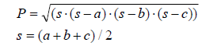

1. Calcular el área y la circunferencia de un círculo, introduciendo el radio (R):
#include < stdio.h>
#include < math.h>
//To declare consts of PI = 3.141593
#define PI 3.141593
void main()
{
//To declare the radius variable, the area of the circle variable, and the power of the pow.
float radius, area_circle;
int power = 2;
//Start the program.....
printf("\nPlease, introduce the radius of the circle: ");
scanf("%f", &radius);
//Doing operations.....
printf("\n\n\tDoing the operation of PI * r^2....\n");
area_circle = PI * pow(radius, power);
//Print the solution....
printf("\n\nThe Area of the circle is: %g m^2\n\n", area_circle);
}
2. Calcular el consumo del coche. Si necesitamos llenar el depósito de X litros para recorrer Y km, ¿cuál es el consumo cada 100 km? Introduce X e Y:
#include < stdio.h>
//To declare consts of the number of 100 KM.
#define CONSUMP 100
void main()
{
//To declare the number of total KM variable, the number of liters of the car tank variable, and the liters per 100 km variable.
float total_km, tank_liters, liters_each;
//Start the program.....
printf("\n\n$$$$$$$$ VOLKSWAGEN CAR CONSUMPTION $$$$$$$$\n\n");
printf("Please, introduce the number of KM that you are going to do with your car: ");
scanf("%f", &total_km);
printf("\nPlease, introduce the number of LITERS that the tank of your car need for doing the %g km: ", total_km);
scanf("%f", &tank_liters);
//Doing operations.....
printf("\n\n\tDoing the operation of calculating the consumption of X liters per 100 km....\n");
liters_each = (CONSUMP * tank_liters) / total_km;
//Print the solution....
printf("\n\nEach 100 KM, you are going to waste: %g L\n\n", liters_each);
}
3. Calcular la hipotenusa (c) de un triángulo rectángulo a partir de sus lados (a y b) a ingresar. Para ello, es necesaria una función para calcular la raíz cuadrada (sqrt()), una función para la potencia de un número (pow(number, power)) y la biblioteca de math.h para poder usar ambas funciones descritas:

#include < stdio.h>
#include < math.h>
//To declare consts of the power of a pow.
#define SQUARE_POWER 2.0
void main()
{
//To declare the sides of a right angled triangle variables, and the hypotenuse variable.
float a, b, h;
//Start the program.....
printf("\n\n$$$$$$$$$$$$$$$$$$$$$$$$ PYTHAGOREAN THEOREM $$$$$$$$$$$$$$$$$$$$$$$$\n\n");
printf("Please, introduce the measure of one side of the right angled triangle: ");
scanf("%f", &a);
printf("\nPlease, introduce the measure of the other side of the right angled triangle: ");
scanf("%f", &b);
//Doing operations.....
printf("\n\n\tDoing the operation of the PYTHAGOREAN THEOREM....\n");
h = sqrt(pow(a, SQUARE_POWER) + pow(b, SQUARE_POWER));
//Print the solution....
printf("\n\nThe HYPOTENUSE of the right angled triangle is: %g\n\n", h);
}
4. Calcular el área de un triángulo introduciendo sus tres lados (a, b y c). Calcular el área P. Para ello, hay que usar la Fórmula de Heron:

#include < stdio.h>
#include < math.h>
//To declare consts for dividing.
#define DIVIDER 2.0
void main()
{
//To declare the sides of a triangle variables, and the first and second solution of both formulas variables.
float a, b, c, s, P;
//Start the program.....
printf("\n\n$$$$$$$$$$$$$$$$$$$$$$$$ HERON'S FORMULA $$$$$$$$$$$$$$$$$$$$$$$$\n\n");
printf("Please, introduce the measure of the first side of the triangle: ");
scanf("%f", &a);
printf("\nPlease, introduce the measure of the second side of the triangle: ");
scanf("%f", &b);
printf("\nPlease, introduce the measure of the third side of the triangle: ");
scanf("%f", &c);
//Doing operations.....
printf("\n\n\tDoing the operation of the HERON'S FORMULA....\n");
s = (a + b + c) / DIVIDER;
P = sqrt(s * (s-a) * (s-b) * (s-c));
//Print the solution....
printf("\n\nThe Area P of the HERON'S FORMULA is: %g\n\n", P);
}
5. Crear un conversor de divisas de EUR a RSD (moneda de Serbia), introduciendo el tipo de cambio y la cantidad de EUR a convertir:
#include < stdio.h>
//To declare the const of the exchange rate from EUR to RSD.
#define EXCHANGE_RATE 117.72
void main()
{
//To declare the amount of � variable and the amount of RSD variable.
float EUR, RSD;
//Start the program.....
printf("\n\n$$$$$$$$$$$$$$$ C U R R E N C Y C O N V E R T E R $$$$$$$$$$$$$$$\n\n");
printf("\n\n$$$$$$$$$$$$$$$$$$$$$ E U R O S T O R S D $$$$$$$$$$$$$$$$$$$$$\n\n");
printf("Please, introduce the amount of EUROS that you want to exchange: ");
scanf("%f", &EUR);
//Doing operations.....
printf("\n\n\tDoing the operation of the CURRENCY CONVERTER from euros to RSD....\n");
RSD = EUR * EXCHANGE_RATE;
//Print the solution....
printf("\n\nYou are going to receive: %g RSD\n\n", RSD);
}
6. Crear un programa para convertir un número de 3 dígitos (por ejemplo 152) en tres variables de tipo char (igual que int, solo que ocupa 1 byte de memoria y, dado que almacenaremos solo los números del 0 al 9, es suficiente):

#include < stdio.h>
//To declare the consts of substract 100 and 10.
#define HUNDREDS 100
#define TENS 10
void main()
{
//To declare the 3-digit number variable, and three variables for hundreds, tens and ones.
int digits, s, d, j;
//Converted variables of type char.
char s_char, d_char, j_char;
//Start the program.....
printf("\n\n$$$$$$$$$$ S E P A R A T E T H E D I G I T S O F A N U M B E R $$$$$$$$$$\n\n");
printf("Please, introduce a number with 3 digits: ");
scanf("%d", &digits);
//Doing operations.....
printf("\n\n\tDoing the operation of Separate the digits of the written number....\n\n");
s = digits / HUNDREDS;
d = (digits / TENS) - (s * TENS);
j = digits - (s * HUNDREDS) - (d * TENS);
printf("\t***************************************************************************\n");
printf("\tConvert the s, d and j to type char variables\n\n");
s = s + 48;
d = d + 48;
j = j + 48;
s_char = (char)s ;
d_char = (char)d;
j_char = (char)j;
//Print the solution....
printf("\n\nYour number is %c%c%c, whom hundreds are: %c, tens are: %c and ones are: %c\n\n", s_char, d_char, j_char, s_char, d_char, j_char);
}
7. Hacer un programa para calcular la temperatura, introduciendo ºC y sacando ºF
Importante: ºF = ºC * 1,8 + 32
#include < stdio.h>
//To declare the consts of the Celsius to Fahrenheit formula.
#define FIRST_CTE 9.0
#define SECOND_CTE 5.0
#define THIRD_CTE 32.0
void main()
{
//To declare the temperature in Novi Sad today variable, and the variable of the convertion in ºF.
float degrees, convertion;
//Start the program.....
printf("\n\n$$$$$$$$$$ C O N V E R T T H E T E M P E R A T U R E $$$$$$$$$$\n\n");
printf("\n\n$$$$$$$ F R O M C E L S I U S T O F A H R E N H E I T $$$$$$\n\n");
printf("Please, introduce the Celsius degrees that there are in Novi Sad today: ");
scanf("%f", °rees);
//Doing operations.....
printf("\n\n\tDoing the convertion from Celsius to Fahrenheit....\n\n");
convertion = (FIRST_CTE / SECOND_CTE)*degrees + THIRD_CTE;
//Print the solution....
printf("\n\nThe temperature today in Novi Sad is: %g F degrees.\n\n", convertion);
}
8. Hacer un programa introduciendo el tiempo en segundos totales y sacándolo en horas, minutos y segundos. Ejemplo: 7322 s = 2h 2m 2s:
#include < stdio.h>
//To declare the const of passing between hours, min and seconds.
#define MIN_SEG 60.0
void main()
{
//To declare the variable of seconds, minutes and hours.
float seg, min, hours, aux, time_out;
int seg_clock, min_clock, hours_clock;
//Start the program.....
printf("\n\n$$$$$$$$$$$$$$$$$$$$$$$$$$$$$$$$$$$$$$$\n");
printf("$$$$$$$$$$ S T O P W A T C H $$$$$$$$$$\n\n");
printf("Please, introduce a total number of seconds: ");
scanf("%f", &time_out);
//Doing operations.....
printf("\n\n\tDoing the stopwatch operations....\n\n");
hours = (time_out / (MIN_SEG * MIN_SEG));
hours_clock = (int)hours;
aux = (float)hours_clock;
hours = hours - aux;
min = hours * MIN_SEG;
min_clock = (int)min;
aux = (float)min_clock;
min = min - aux;
seg = min * MIN_SEG;
seg_clock = (int)seg;
//Print the stopwatch....
printf("\n\nSTOPWATCH => %gs = %dh %dm %ds\n\n", time_out, hours_clock, min_clock, seg_clock);
}
9. Hacer un programa introduciendo la longitud en cm y sacándola en pies y pulgadas
Importante: 1 pulgada = 2,54 cm y 1 pie = 12 pulgadas:
#include < stdio.h>
//To declare the const of converting to inch and to feet.
#define CTE_CM 2.54
#define CTE_INCH 12
void main()
{
//To declare the variable of seconds, minutes and hours.
float length_measure_cm, length_measure_inch;
int length_measure_feet;
//Start the program.....
printf("\n\n$$$$$$$$$$$$$$$$$$$$$$$$$$$$$$$$$$$$$$$\n");
printf("$$$$$$$$$$$ LENGTH CONVERTER $$$$$$$$$$\n\n");
printf("Please, introduce the measure of length in CM: ");
scanf("%f", &length_measure_cm);
//Doing operations.....
printf("\n\n\tDoing the Length Converter operations....\n\n");
length_measure_feet = length_measure_cm / (CTE_CM * CTE_INCH);
length_measure_inch = (length_measure_cm - (length_measure_feet * CTE_INCH * CTE_CM)) / CTE_CM;
//Print the stopwatch....
printf("\n\n%g cm <=> %d feet %g inch.\n\n", length_measure_cm, length_measure_feet, length_measure_inch);
}
Ubicación: Universidad de Novi Sad - Dr Zorana Đinđića 1, Novi Sad 21000, Vojvodina, Serbia
Teléfono: +381 21 485 2056
Correo electrónico: iro.ftn@uns.ac.rs
Copyright © 2023-2030 My Professional WEB - Todos los derechos reservados